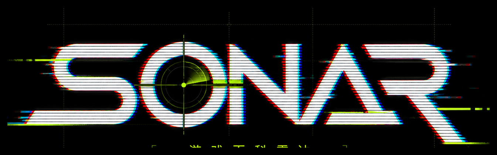

PROJECT ENTRY / RESPONSIVE PREVIEW
SONAR 三端响应式工程入口
本入口用于作品集检查与演示。PC 端可直接访问三大页面，也可以通过平板和手机预览入口，在桌面浏览器内查看对应端口的布局、触控区域与安全区处理。
PC 页面入口
直接浏览完整桌面端页面游戏资讯快报、平台促销、新游时间轴。
SEARCH / LIBRARY游戏库搜索模糊检索、筛选条件、结果卡片与搜索情报站。
WIKI / DEAD SPACE死亡空间百科游戏简介、截图浏览、基础资料和论坛瀑布流。
另外两端 Web 预览入口
方便在 PC 浏览器内检查平板与手机端模拟 834×1112 视口，检查横向滑动导航、双栏收缩、触控按钮与边缘安全区。
进入平板端 MOBILE WEB PREVIEW手机版预览模拟 390×844 视口，检查底部手势死区、顶部安全区、单列卡片与 44px 触控面积。
进入手机端说明：预览入口通过 iframe 固定视口展示页面，适合在 PC 端快速检查另外两端；最终交付页面仍然使用同一套响应式 HTML/CSS。